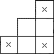

A piece is made of 12 unit cubes. It looks like a staircase of 3 steps, each of width 2. Thus the bottom layer is 2 x 3, the second layer is 2 x 2 and the top layer is 1 x 2. For which n can we make an n x n x n cube with such pieces?
Solution
Answer: n a multiple of 12.
Obviously a necessary condition is that 12 divides n3 and hence that n is a multiple of 6. Two pieces can be fitted together to form a 2 x 3 x 4 brick. It is easy to use such bricks to form a 12 x 12 x 12 cube and hence an n x n x n cube for n a multiple of 12. So the only case of interest is n = 6 mod 12.
Suppose an n x n x n cube can be made up of the pieces. Label the small cubes with x, y, z coordinates. Color the small cubes with 8 colors according to the parity of the coordinates. Then each small cube in any 2 x 2 x 2 cube will be colored differently, so each cube in the central 2 x 2 x 2 cube of a piece is colored differently. The three small cubes marked x in the diagram below will be colored the same, and similarly the three small cubes behind them. Thus each color appears either one or three times in a piece.

Take one of the colors. Suppose that s pieces have just one cube of that color, and t pieces have three cubes of that color. Then in total there are s + 3t small cubes with the color. But n is even, so the n x n x n cube can be divided into 2 x 2 x 2 cubes and hence there are n3/8 small cubes of each color. There are s + t pieces in total, so n3 = 12(s + t). Hence s + 3t = 12(s + t)/8, so 4s = 12t, and s = 3t. So the total number of pieces is s + t = 4t. Hence the total number of small cubes is 48t = n3. So 16 divides n3 and hence 4 divides n. So we cannot have n = 6 mod 12.

© John Scholes
jscholes@kalva.demon.co.uk
10 Oct 2002